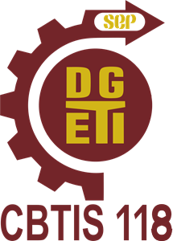

Horario de reincorporación al plantel es ünicamente en el turno vespertino sin excepción TODOS aquellos alumnos que NO DEBEN NINGUNA ASIGNATURA HASTA o sólo 2 asignaturas básicas o 1 módulo dell componente profesional, deberán realizar este proceso, para integrarse a los procesos de reinscripción e ir regularizando la situación académica
Presentarse con madre o padre de familia son identificación oficial en control escolar Historial académica
8:00 am a 10:00 am
14:00 16:00 hrs.
8:00 am a 10:00 am
14:00 14:00 hrs.
TODOS aquellos alumnos que cuenten con MÁS de 2 asignaturas REPROBADAS o 2 módulos del componente profesional, deberán realizar este proceso, UNICO DIA. para integrarse a los procesos extraordinarios y de esta manera ir regularizando la situación académica. Requisitos que deberá cubrir:
De NO realizar la baja, los procesos extraordinarios a los que se hayan registrado, se anularân y la escuela se deslinda de toda responsabilidad.
T. MATUTINO 8:00 a.m. a 10:00 a.m. T. VESPERTINO 14:00 a 16:00 hrs.Ciclo escolar 2024-2025